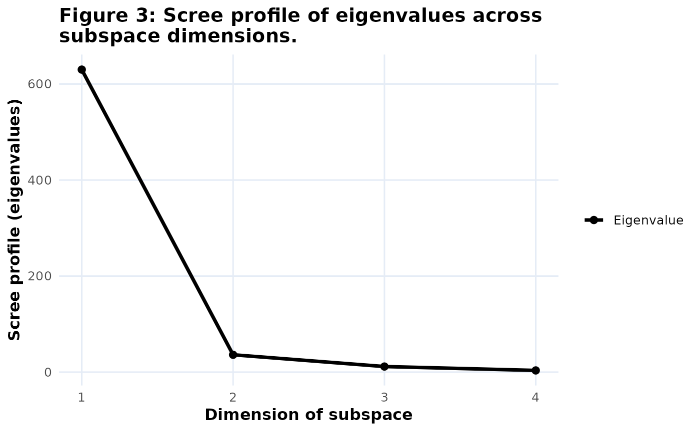

Reconstructs one of the PCA fit graphs from its stored plotly traces. The fit type is inferred from the trace metadata and trace types, then translated into a ggplot2 chart with matching title, legend titles, and axes.
Usage
# S3 method for class 'bipl5_fit'
plot(x, y = NULL, ...)Details
Supported fit graphs are cumulative predictivity (CumPred),
cumulative adequacy (CumAd), variance explained (VarExp), and
the scree plot (Scree). The summary-table fit objects are not handled
by this plotting method.
Examples
bp <- biplotEZ::biplot(iris[, 1:4]) |>
biplotEZ::PCA() |>
wrap_bipl5()
fit_plot <- extract(bp, fit_measures, Scree)
plot(fit_plot)
